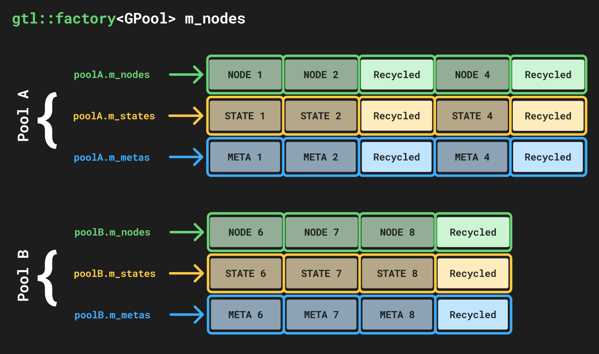
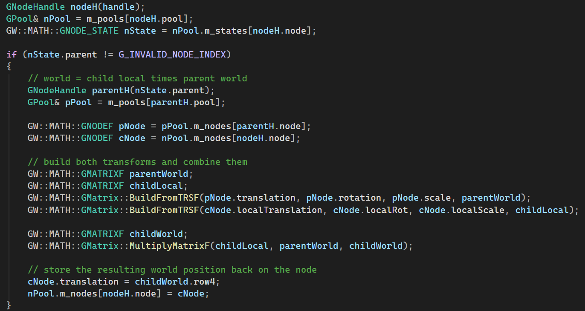
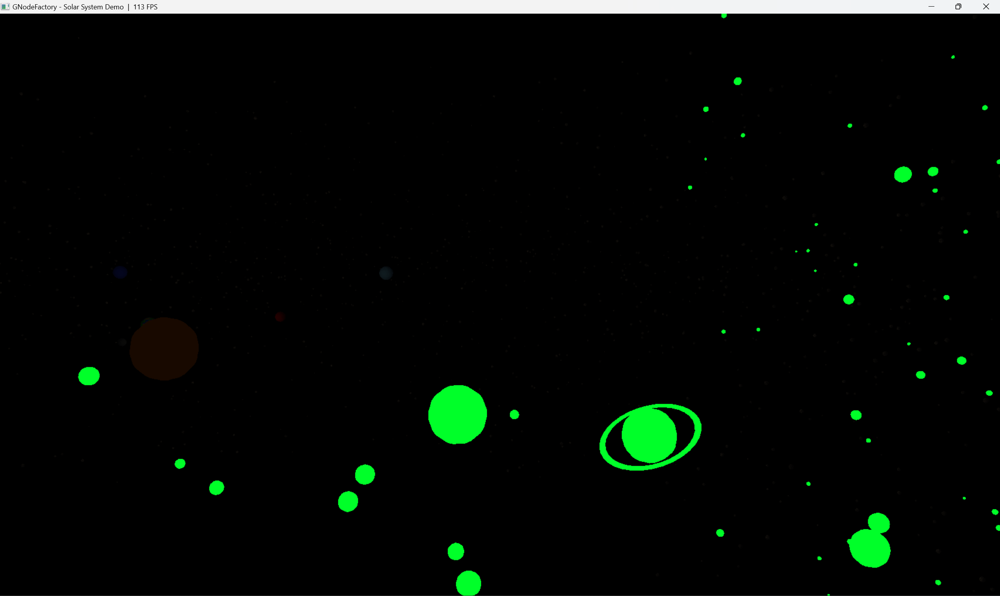
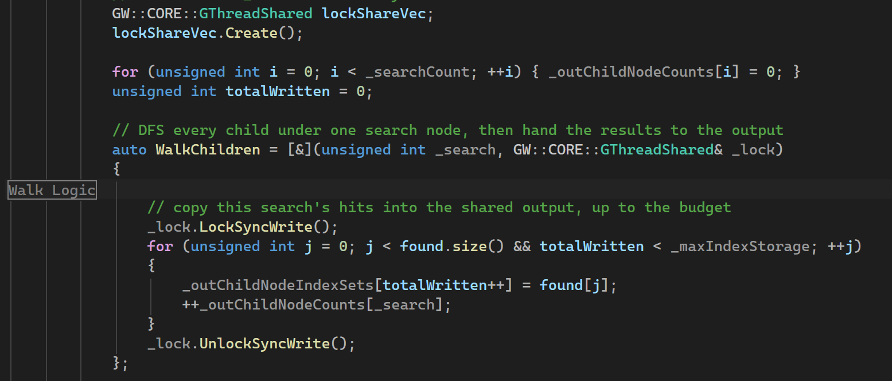
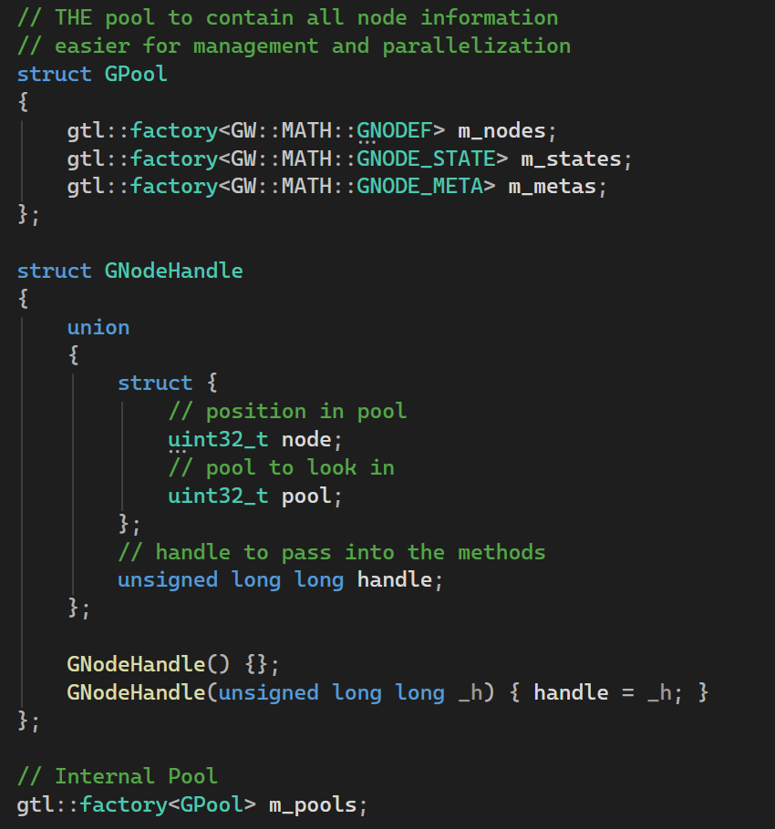

The Solar System Demo driven entirely by GNodeFactory, running at 123 FPS.
Every node returned by a spatial query, highlighted in green.
The node pools and the packed 64-bit handle used to address them.

Resolving a child's world transform from its parent.
Writing search results back under a shared write lock.